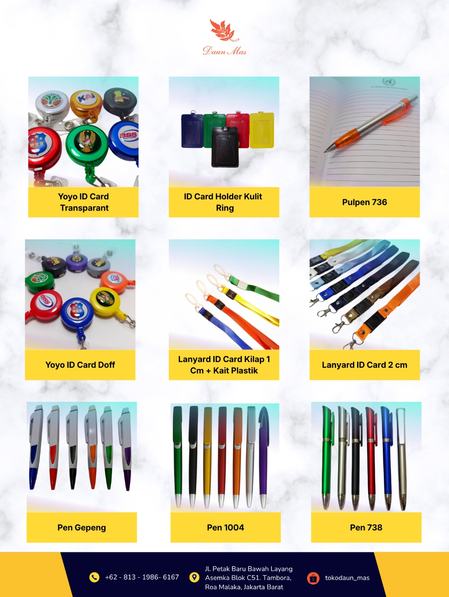
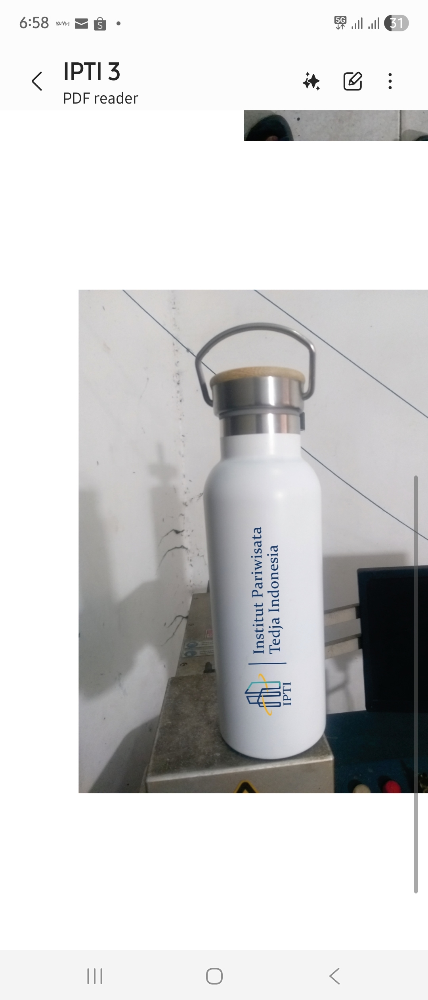
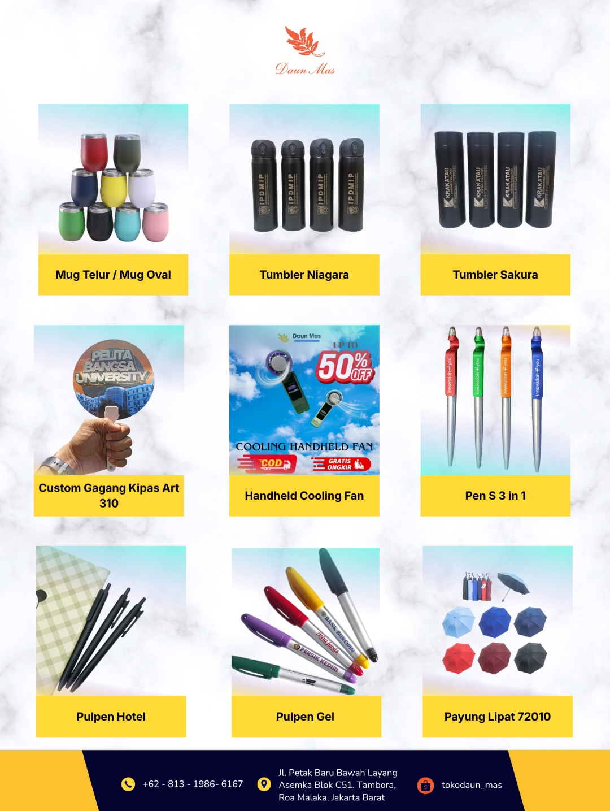

B2B ID Card Manufacturing
Perusahaan Besar
Dipercaya brand seperti Garuda Indonesia, Royal Canin, ANTAM, KAI, Casa Grande, dan Telkomsel untuk kebutuhan identitas dan merchandise.[file:0]
Skala Produksi Massal
Website ini diarahkan untuk quantity besar, proyek pengadaan, dan kebutuhan multi-cabang di seluruh Indonesia.[file:0]
Personalisasi Data
Cocok untuk employee card, visitor card, student card, hingga access card dengan data berbeda tiap kartu.[file:0]
Pengiriman Nasional
Struktur website menekankan pengiriman seluruh Indonesia sebagai sinyal kesiapan melayani proyek nasional.[file:0]
Spesialis Produksi ID Card dan Lanyard Skala Besar untuk Perusahaan & Instansi
Daun Mas difokuskan sebagai website B2B untuk membangun kepercayaan, menunjukkan kapasitas produksi, dan memudahkan calon klien mengajukan RFQ atau permintaan penawaran harga, bukan seperti toko online biasa.[file:0]




Keunggulan Utama
Kapasitas produksi besar, kualitas konsisten, personalisasi data, dan pengiriman nasional adalah empat pesan utama yang ditekankan untuk calon klien B2B.[file:0]
Homepage structure
Homepage diarahkan untuk meyakinkan pengunjung dalam lima detik pertama.
Struktur yang Anda minta untuk halaman utama terdiri dari hero section, statistik, keunggulan, produk unggulan, portofolio, testimoni klien, dan CTA menuju form penawaran.[file:0]
Kapasitas Produksi Besar
Konten homepage dibuat untuk menegaskan kesiapan menangani project mass production dan kebutuhan quantity besar.[file:0]
Kualitas Konsisten
Pesan kualitas konsisten diposisikan sebagai faktor kepercayaan utama untuk procurement, HRD, dan instansi.[file:0]
Personalisasi Data
Website menyorot kemampuan cetak data berbeda untuk setiap kartu sesuai kebutuhan skala perusahaan dan proyek.[file:0]
Pengiriman Nasional
Alur komunikasi dan CTA diarahkan untuk lead dari berbagai kota, bukan hanya pembeli lokal.[file:0]
Produk & Layanan
Fokuskan produk unggulan yang paling relevan untuk perusahaan dan instansi.
Produk yang diminta sebagai prioritas mencakup ID Card PVC, RFID Card, Lanyard Custom, Name Tag, Member Card, dan Access Card, lengkap dengan spesifikasi, material, finishing, fungsi, frekuensi, dan contoh hasil.[file:0]

Tentang Kami
Bangun kredibilitas dengan profil, workshop, mesin, dan tim produksi.
Halaman Tentang Kami perlu berisi profil Daun Mas, visi dan misi, nilai perusahaan, mesin produksi, tim produksi, dan sertifikasi jika ada, serta sangat disarankan menambahkan foto workshop dan mesin agar terlihat kredibel.[file:0]
PR
Profil Daun MasMenjelaskan fokus sebagai vendor B2B untuk perusahaan, pemerintah, BUMN, universitas, rumah sakit, dan pengadaan.[file:0]VM
Visi & MisiMemberi arah perusahaan, standar layanan, dan nilai profesionalisme untuk calon klien institusional.[file:0]MS
Mesin ProduksiFoto mesin dan area produksi penting untuk memperkuat sinyal kapasitas dan kesiapan mass production.[file:0]TM
Tim & SertifikasiProfil tim produksi dan sertifikasi, jika ada, membantu meningkatkan kepercayaan calon pengadaan.[file:0]
Nilai perusahaan
KapasitasWebsite diarahkan untuk menunjukkan kapasitas produksi besar dan pengelolaan quantity tinggi.[file:0]
KonsistensiKualitas hasil cetak dan akurasi data ditekankan sebagai faktor pembeda dari kompetitor.[file:0]
KepercayaanStudi kasus, portofolio proyek, dan daftar klien besar harus jadi bagian utama narasi brand.[file:0]
Tambahkan foto workshop dan mesin produksi pada revisi berikutnya agar bagian ini lebih kuat secara visual.[file:0]
Solusi Berdasarkan Industri
Ini salah satu halaman paling penting untuk SEO dan lead generation.
Halaman industri diminta secara khusus karena sangat penting untuk SEO, dengan segmentasi perusahaan, instansi pemerintah, universitas, rumah sakit, dan event organizer.[file:0]
Employee card & visitor card
Ditujukan untuk HRD, procurement, general affairs, dan pengelolaan identitas karyawan skala besar.[file:0]
Kartu pendataan & sensus
Menyasar pengadaan pemerintah dan proyek nasional yang membutuhkan produksi massal dan akurasi tinggi.[file:0]
Student card & access card
Mendukung identitas mahasiswa, akses gedung, serta kebutuhan operasional kampus.[file:0]
ID tenaga medis
Fokus pada identitas staff medis, akses, dan kebutuhan lingkungan layanan kesehatan.[file:0]
Event badge & lanyard
Menjangkau seminar, konferensi, expo, dan acara berskala besar yang membutuhkan badge profesional.[file:0]
Portofolio Proyek
Tampilkan studi kasus agar calon klien lebih percaya sebelum menghubungi.
Halaman portofolio diminta berisi contoh proyek seperti Sensus Ekonomi 40.000 ID Card, proyek universitas 15.000 student card, dan proyek perusahaan nasional 20.000 employee card, lengkap dengan timeline dan hasil produksi.[file:0]
40K
Proyek Sensus EkonomiContoh studi kasus yang diusulkan adalah produksi 40.000 ID Card untuk proyek pendataan skala besar.[file:0]15K
Proyek UniversitasContoh lain adalah 15.000 student card untuk kebutuhan kampus dan akses mahasiswa.[file:0]20K
Perusahaan NasionalStudi kasus perusahaan nasional disarankan menampilkan 20.000 employee card beserta timeline dan hasil produksi.[file:0]

Proses Produksi
Visualkan alur kerja agar pembeli procurement merasa prosesnya jelas.
Halaman proses produksi diminta memvisualisasikan enam tahap, yaitu konsultasi, penawaran harga, approval desain, produksi, quality control, dan pengiriman, karena sering menjadi faktor pembeda dari kompetitor.[file:0]
Konsultasi
Klien menjelaskan kebutuhan produk, quantity, dan spesifikasi proyek.[file:0]
Penawaran Harga
Daun Mas menyiapkan quotation sesuai kebutuhan dan target pengadaan.[file:0]
Approval Desain
Desain dan data dikonfirmasi sebelum produksi massal dimulai.[file:0]
Produksi
Tahap ini menegaskan kapasitas dan kesiapan mengelola quantity besar.[file:0]
Quality Control
QC diposisikan sebagai penanda kualitas konsisten dan akurasi data.[file:0]
Pengiriman
Website menguatkan kesiapan pengiriman ke seluruh Indonesia.[file:0]
Blog / Artikel
Blog diarahkan untuk SEO, edukasi, dan penangkapan lead dari Google.
Blog disarankan tidak hanya informatif, tetapi juga menargetkan calon pelanggan yang mencari vendor ID card, lanyard, dan kartu PVC di Google, dengan target awal total 40 artikel yang terdiri dari 20 artikel edukasi, 10 artikel SEO lokal, 5 studi kasus proyek, dan 5 artikel teknologi.[file:0]
Edukasi Produk
Contoh topik meliputi panduan memilih ID Card PVC berkualitas, jenis lanyard, ukuran kartu, dan perbedaan RFID, smart card, serta smart access system.[file:0]
Solusi Korporasi
Artikel menargetkan HRD, procurement, dan GA, seperti manfaat visitor card, employee ID card profesional, dan tips memilih vendor untuk kantor.[file:0]
Pengadaan & Proyek
Topik difokuskan pada peran ID card untuk sensus nasional, kriteria vendor pengadaan, dan produksi puluhan ribu kartu identitas.[file:0]
RFID, QR, & Data
Kategori ini membangun citra Daun Mas sebagai perusahaan modern melalui artikel RFID, QR code, personalisasi data, dan keamanan data produksi.[file:0]
Artikel unggulan
Panduan Memilih ID Card PVC Berkualitas untuk PerusahaanArtikel contoh yang Anda berikan menekankan pentingnya material PVC premium, hasil cetak tajam, laminasi pelindung, konsistensi warna, kapasitas produksi besar, quality control, dan dukungan personalisasi data.[file:0]
Artikel SEO potensialContoh keyword potensial meliputi harga cetak ID Card PVC terbaru, vendor ID Card Jakarta, vendor ID Card Indonesia, cetak Lanyard custom quantity besar, dan vendor ID Card untuk instansi pemerintah.[file:0]
Request Quotation
Homepage → Produk → Portofolio → Request Quotation adalah alur konversi utama.
Anda menekankan bahwa pengunjung jangan langsung diarahkan ke katalog seperti toko online, melainkan menjadi lead dengan mengisi form penawaran, dan empat halaman terpenting untuk prospek adalah Homepage, Produk, Portofolio, dan RFQ.[file:0]
Form RFQ
FAQ
Jawab pertanyaan umum agar tim sales tidak mengulang penjelasan dasar.
Pertanyaan FAQ yang Anda minta meliputi minimum order, lama produksi, cakupan pengiriman nasional, kemampuan cetak data berbeda, dan dukungan desain.[file:0]
Website ini dirancang untuk quantity besar dan lead B2B, sehingga pesan minimum order sebaiknya diarahkan ke kebutuhan perusahaan dan proyek pengadaan.[file:0]
Estimasi produksi sebaiknya dijelaskan berdasarkan quantity, personalisasi data, approval desain, dan target deadline klien.[file:0]
Ya, struktur website yang Anda minta menekankan pengiriman nasional sebagai salah satu value utama.[file:0]
Kemampuan personalisasi data menjadi salah satu pesan inti yang harus ditonjolkan di homepage dan halaman produk.[file:0]
Halaman FAQ perlu menjelaskan bahwa tim dapat membantu proses desain sebelum approval produksi.[file:0]